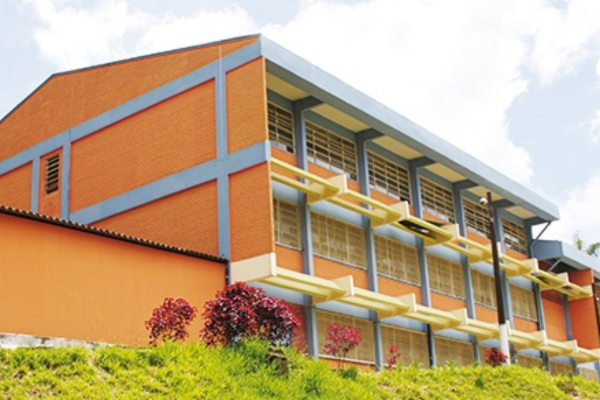

Seu Futuro
Seu Futuro
Descubra oportunidades e transforme seu potencial.
Conhecer a ETEC
Cada tópico é uma página dedicada.
Os Objetivos de Desenvolvimento Sustentável (ODS) são 17 metas globais criadas pela Organização das Nações Unidas (ONU) em 2015, como parte da Agenda 2030. Eles guiam ações de países, empresas e cidadãos para um futuro mais justo, saudável e sustentável. Este site apoia diretamente dois deles.
Nossa seção de Saúde Mental oferece exercícios de respiração, técnicas de grounding, guias anti-ansiedade e canais de apoio como o CVV (188) e os CAPS. Cuidar do emocional é tão importante quanto estudar; um estudante bem não rende mais, ele vive melhor.
Reunimos informações claras sobre ETEC, vestibulares e faculdade, além de ferramentas práticas como o Pomodoro e a lista de tarefas. O objetivo é democratizar o acesso a conhecimento de organização, preparação e orientação vocacional.
Acreditamos que educação de qualidade (ODS 4) e saúde mental (ODS 3) caminham juntas. Um estudante que conhece seus caminhos e se organiza reduz a ansiedade; um estudante que cuida do bem-estar aprende melhor. Por isso, todo o site foi pensado para acolher, informar e apoiar, sem cobrança e sem julgamento.